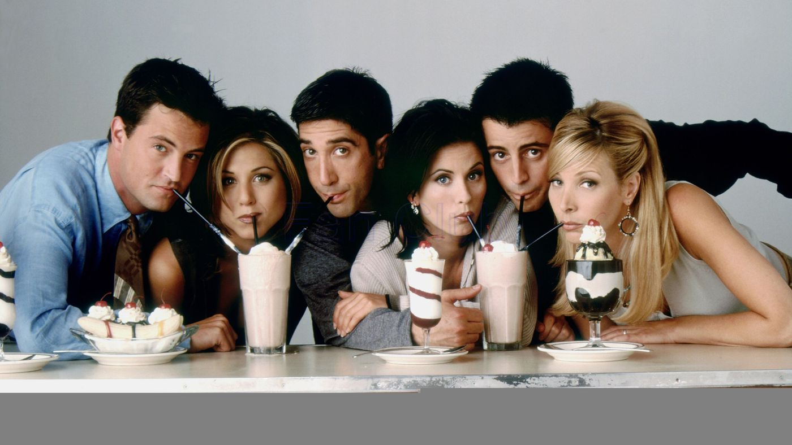

Copyright to the respective owners
This show is not your normal fairy-tale story, the story begins in a small town called Storybrooke, this was a normal town in America, it was created by the Evil Queen as a way to take everyone’s happy endings, but Emma (Snow White’s daughter) is the chosen one who can break the curse and give back their happy endings. Will Henry (Emma’s Son) be able to convince Emma that magic exists?
I loved this show, during the COVID-19 pandemic I discovered this show and was instantly pulled in. This show has a sense of familiarity to me as I am someone who grew up with Disney, this in dept look of characters was great and kept me engaged. However, I must state season 7 starts of very different from the rest of the seasons and despite individuals not liking it I really enjoyed this new arch. Regardless majority of individuals can agree that the end of season 7 was worth it.